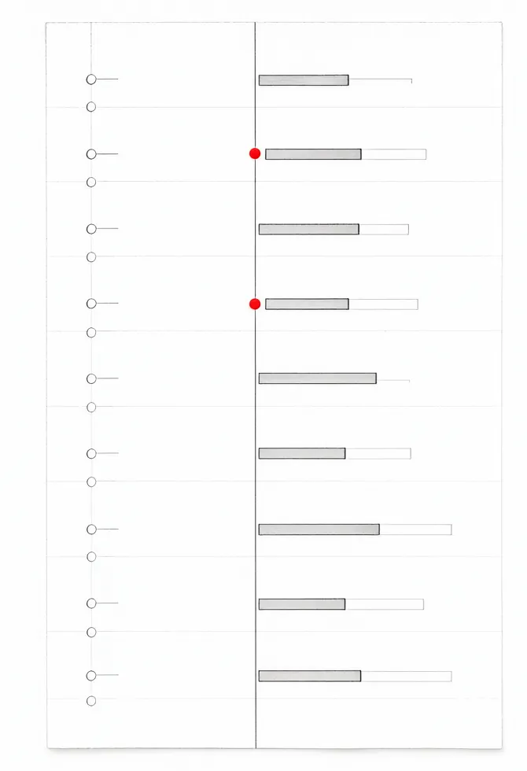

Play along, then play over it.
Partplay is an online learning platform for musicians. Every piece in the library is recorded by professional musicians and bands; a learner plays along with that recording and records themselves over it, on the web and on iOS.
Ten-plus in the team, two clients — 1 Hub Media Ltd and Partplay Ltd — with the web dashboard and the Go server applications on my side.
- Role
- Lead Developer
- Dates
- Aug 2018 – Jul 2019
- Surface
- Web dashboard, Go server applications
- Also
- iOS and Android clients
The problem
A practice take that arrives late or out of order is worse than no take at all: the learner stops trusting the recording. Sync between the client and the library is the whole product experience, and it had to be invisible.
Small, in that order.
ApproachFix the sync path first
Improved the iOS sync from 0.01 s to 0.0002 s by cutting work out of the round trip instead of adding a cache on top.
Dashboard before decoration
The web dashboard and the Go server applications grew together, so the interface only ever asks for fields the API already answers quickly.
Lead with the constraint
Client requirements get fixed before they widen: one shape for a take, one rule for its metadata, both ends matching it.
Outcome
